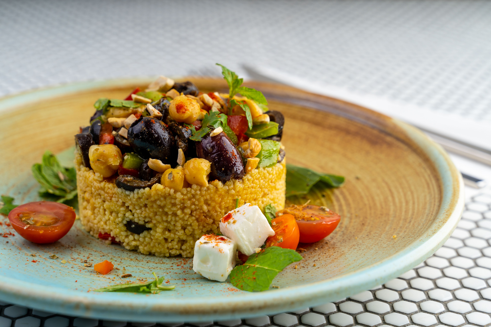

Home
Mayan Couscous

Description
This Mayan couscous salad brings a unique Yucatecan twist to a classic dish. Visitors to Mérida are often surprised by the incredible Middle Eastern influence found in local street food, like kibbeh. This recipe celebrates that beautiful blend of cultures, adopting delicious ingredients brought by Lebanese immigrants over a century ago.
Ingredients
- 1 cup couscous
- 1 teaspoon salt, or to taste
- ½ teaspoon ground cumin
- 1 ¼ cups boiling water
- 1 clove garlic, unpeeled
- 1 (15 ounce) can black beans, rinsed and drained
- 1 cup canned whole kernel corn, drained
- ½ cup finely chopped red onion
- ¼ cup chopped fresh cilantro
- 3 tablespoons olive oil
- 3 tablespoons fresh lime juice, or to taste
- 1 jalapeño pepper, minced
Steps
- Combine couscous, salt, and cumin in a large bowl.
- Stir in boiling water, cover, and set aside for 10 minutes.
- Toast the unpeeled garlic clove in a skillet until golden brown.
- Peel and mince the toasted garlic.
- Fluff the couscous and stir in the minced garlic.
- Add black beans, corn, onion, cilantro, olive oil, lime juice, and jalapeño.
- Mix well and serve either warm or cooled.